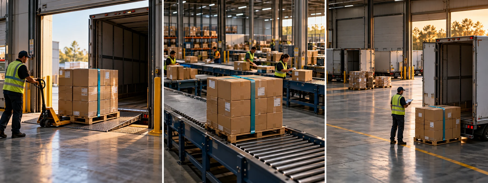

F25 · 고급 · FPV
관찰·토론
같은 물품의 식별 단서를 유지하며 입고·분류·출고 단계가 전달할 정보를 나누어 설계한다.
그림에서 확인할 세 가지시설의 크기보다 공정의 연결을 설명
1입고되는 팔레트
첫 화면의 물품과 고정 끈을 기억한다. 창고의 다른 화물 속에서도 이후 같은 대상을 알아볼 수 있는 시각적 단서다.
2분류되는 물건
가운데 화면은 물품의 위치와 주변 작업 공간이 바뀐다. 같은 대상이 다른 공정에 들어갔다는 정보를 배경과 행동에서 읽는다.
3출고로 이어지는 흐름
마지막 화면에서 물품과 운송 준비의 관계를 본다. 넓은 창고를 보여준 결과가 아니라 물건의 다음 목적지를 설명하는 끝이다.
촬영 설계
촬영을 이렇게 설계한다
추적할 물품을 정한다
학습 장면에서는 같은 색의 고정 끈이 있는 팔레트를 기준으로 삼는다. 장소가 달라져도 같은 대상임을 알아볼 수 있어야 공정의 순서가 단순한 창고 장면 모음과 구별된다.
단계마다 다른 행동을 보인다
입고·분류·출고에 모두 같은 통로 이동만 넣지 않는다. 물건을 받는 상황, 목적지를 확인하는 상황, 운송을 준비하는 상황처럼 각 단계가 설명할 행동을 한 가지씩 정한다.
시설과 물품의 비중을 맞춘다
넓은 창고의 규모를 보여줄 때도 기준 물품이 어디에 있는지 놓치지 않게 한다. 학습안에서는 공간을 넓히는 화면과 물품을 다시 확인하는 화면을 비교해 공정의 연속성을 유지한다.
제작사 포트폴리오는 R&C Logistiek를 시네마 카메라 FPV 프로젝트로 소개하지만 공정 설명은 없다.
원본 영상R&C Logistiek
1. 동일 물품의 식별
공간이 달라질 때 같은 물품을 알아볼 단서가 유지되는지 본다. 공정이 이어지는 인상과 비슷한 창고를 나열하는 인상을 구별한다.
2. 단계별 새 정보
장면마다 입고·처리·출고 중 어떤 기능이 드러나는지 본다. 이동 경로만 달라지고 작업 의미는 같다면 새 정보가 부족할 수 있다.
3. 규모와 과정의 균형
시설의 넓이를 보여줄 때 작업 대상도 이해되는지 확인한다. 큰 공간의 인상과 물류 과정의 설명은 서로 다른 목표다.
재생이 제한되면 원본 영상 새 창을 이용하세요.
공식 소개 · 한국어 요약
물류 영상의 제작 정보에서 학습안을 구별한다
공식 정보
메타데이터 요약: Dutch Drone Gods의 R&C Logistiek 페이지는 시네마 카메라 FPV 분야, 제작 고객, 참여 조종자 정보를 제공한다.
미공개 동선
물류 공정을 어떤 순서로 찍었는지, 실제 어떤 물품을 추적했는지에 관한 본문은 없다.
학습안 범위
교안의 같은 팔레트가 이동하는 구성은 공정 설명을 위한 학습안이며 원작의 촬영 동선을 복원한 것이 아니다.
Kling 프롬프트단문 인과 체인 · 16:9
내가 직접 만들어 본다
같은 빨간 끈 팔레트가 장소가 바뀌어도 남아, 입고·분류·출고 단계의 서로 다른 행동을 이어 준다는 인과를 지휘한다.
- S01창고 입구에서 빨간 끈을 맨 팔레트가 들어온다.
- S02영상은 하나의 연속 쇼트다.
- S03처음 10초 동안 지게차가 팔레트를 내려놓는다.
- S04드론은 팔레트의 빨간 끈을 화면에 담는다.
- S05팔레트가 놓이자 작업자가 수량을 센다.
- S06다음 10초 동안 지게차가 팔레트를 분류 구역으로 옮긴다.
- S07드론은 지게차 뒤에서 팔레트를 따라간다.
- S08선반이 넓게 펼쳐지지만 빨간 끈은 화면에 남는다.
- S09분류 구역에서 작업자가 상자의 목적지를 확인한다.
- S10마지막 10초 동안 지게차가 팔레트를 트럭으로 옮긴다.
- S11팔레트가 트럭에 실리자 문이 닫히기 시작한다.
- S12같은 빨간 끈이 트럭 안으로 들어가며 끝난다.
[네거티브]
- 팔레트에 빨간 끈이 없거나 색이 다른 것 금지
- 중간에 컷이 들어가 쇼트가 끊기는 것 금지
- 지게차가 팔레트를 놓지 않고 지나쳐 가는 것 금지
- 빨간 끈이 화면 밖이나 다른 화물에 묻히는 것 금지
- 작업자가 수량을 세지 않고 서 있기만 하는 것 금지
- 팔레트가 분류 구역으로 가지 않고 제자리인 것 금지
- 드론이 팔레트를 앞지르고 지게차만 찍는 것 금지
- 선반이 넓어지며 빨간 끈이 화면에서 사라지는 것 금지
- 목적지 확인 없이 같은 통로 이동만 반복되는 것 금지
- 팔레트가 트럭이 아닌 다른 곳으로 가는 것 금지
- 팔레트가 실리기 전에 문이 이미 닫혀 있는 것 금지
- 다른 색 끈의 팔레트가 트럭에 실리는 것 금지
결과에서 볼 것
- 세 장소에서 같은 빨간 끈이 계속 보였는가
- 입고·분류·출고마다 다른 행동이 보였는가
- 넓은 창고에서도 팔레트의 위치를 놓치지 않았는가